U+ ONE
© 2025
02 /
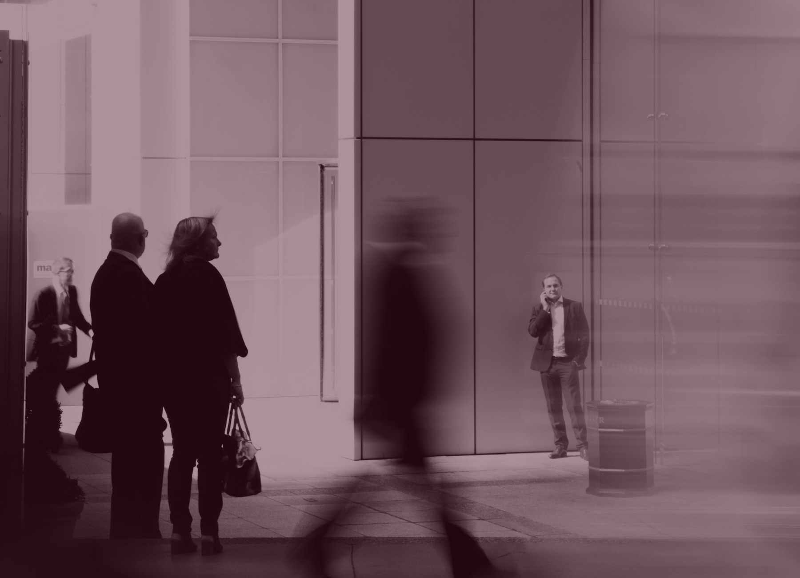
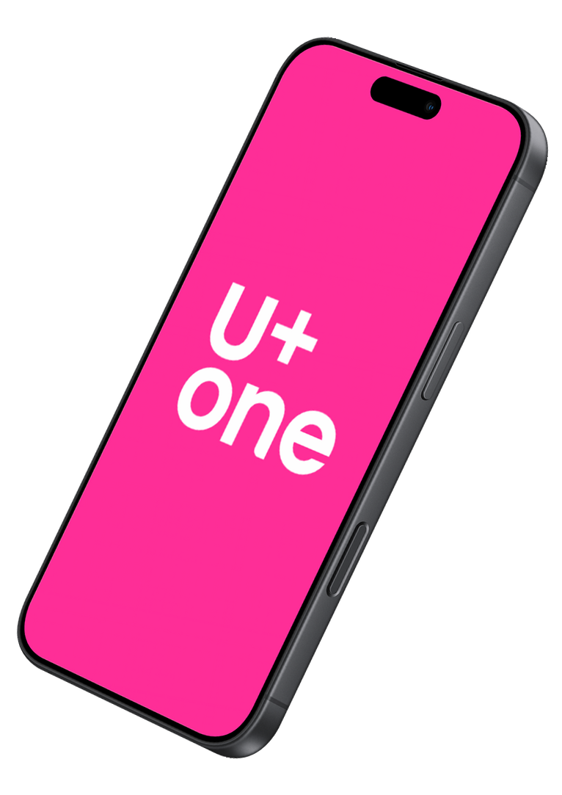
VISIBLE CONNECTION
ABOUT
「SCENT AS A MEMORY」를 중심으로 딥디크의 향을 하나의 기억으로 확장해 표현한 웹 쇼잉입니다. 브랜드와 향수에 대한 소개에서 시작해 세 가지 향을 각각 바다, 무화과, 숲의 이미지와 연결하여 시각화했습니다.
여백과 큰 타이포그래피를 중심으로 구성하고, 향수 이미지와 감각적인 사진을 교차 배치해 향이 특정한 장소와 순간의 기억으로 이어지는 경험을 보여주었습니다.
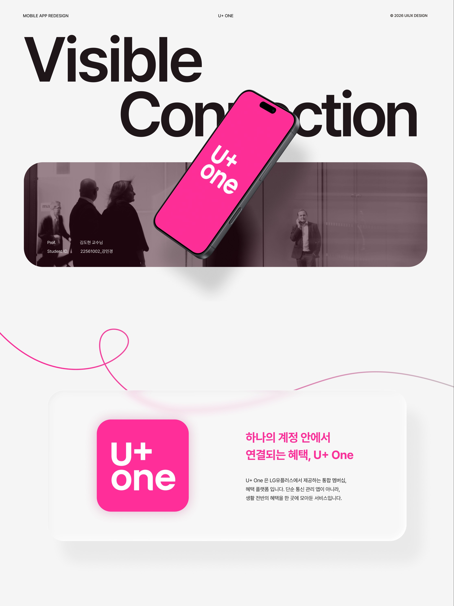
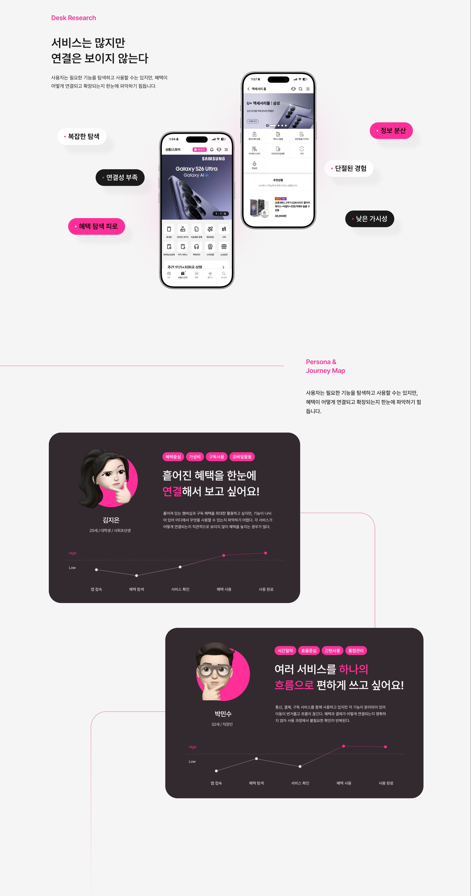
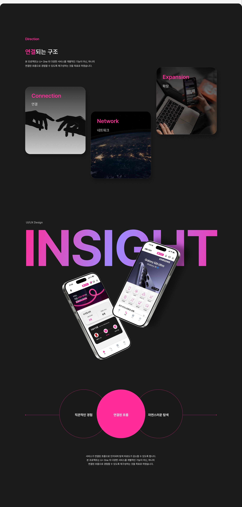
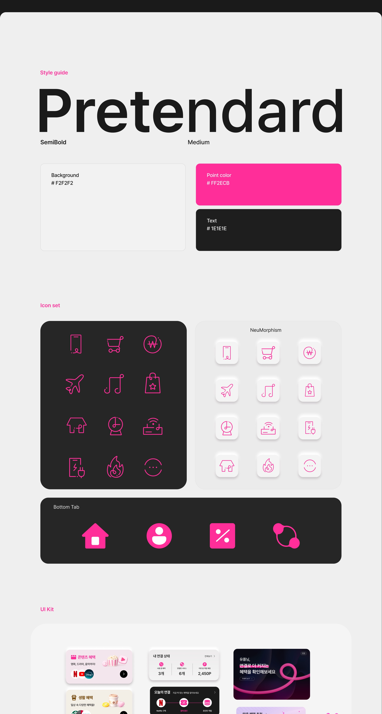
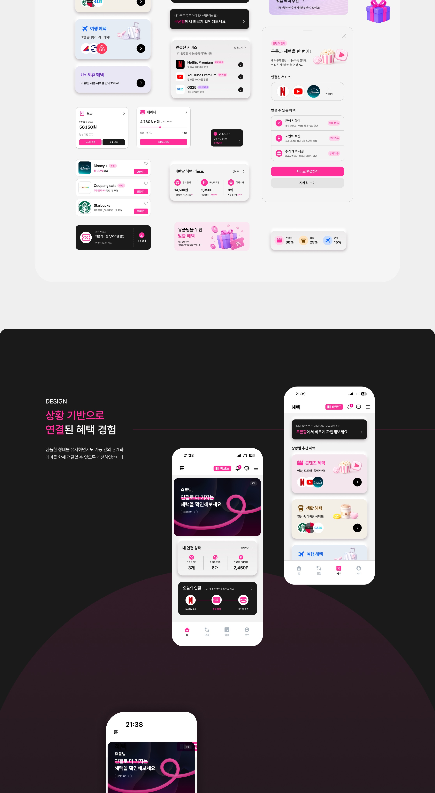
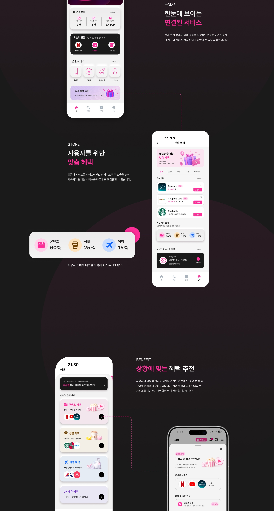
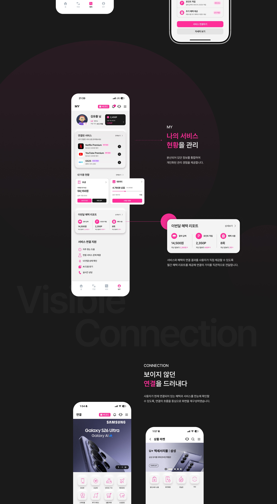
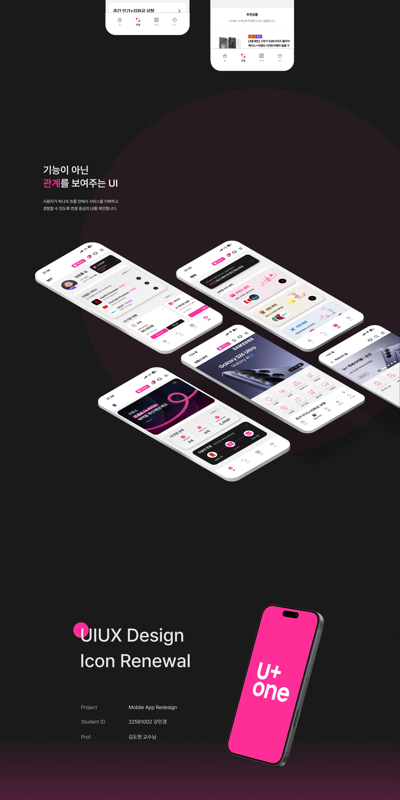
MOBILE APP REDESIGN — U+ ONE — Visible Connection
하나의 계정 안에서 연결되는 혜택, U+ One. U+ One 은 LG유플러스에서 제공하는 통합 멤버십, 혜택 플랫폼 입니다. 단순 통신 관리 앱이 아니라, 생활 전반의 혜택을 한 곳에 모아둔 서비스입니다.
Desk Research — 서비스는 많지만 연결은 보이지 않는다. 사용자는 필요한 기능을 탐색하고 사용할 수는 있지만, 혜택이 어떻게 연결되고 확장되는지 한눈에 파악하기 힘듭니다. 복잡한 탐색, 연결성 부족, 혜택 탐색 피로, 정보 분산, 단절된 경험, 낮은 가시성.
Persona & Journey Map — 흩어진 혜택을 한눈에 연결해서 보고 싶어요! 여러 서비스를 하나의 흐름으로 편하게 쓰고 싶어요!
Direction — 연결되는 구조. 본 프로젝트는 U+ One 의 다양한 서비스를 개별적인 기능이 아닌, 하나의 연결된 흐름으로 경험할 수 있도록 재구성하는 것을 목표로 하였습니다. Connection 연결, Network 네트워크, Expansion 확장.
UI/UX Design — INSIGHT. 직관적인 경험, 연결된 흐름, 자연스러운 탐색.
Style guide — Pretendard SemiBold, Medium. Background #F2F2F2, Point color #FF2ECB, Text #1E1E1E. Icon set, NeuMorphism, Bottom Tab, UI Kit.
DESIGN — 상황 기반으로 연결된 혜택 경험. 심플한 형태를 유지하면서도 기능 간의 관계와 의미를 함께 전달할 수 있도록 개선하였습니다.
HOME — 한눈에 보이는 연결된 서비스. 현재 연결 상태와 혜택 흐름을 시각적으로 표현하여 사용자가 자신의 서비스 현황을 쉽게 파악할 수 있도록 하였습니다.
STORE — 사용자를 위한 맞춤 혜택. 상품과 서비스를 카테고리별로 정리하고 탐색 효율을 높여 사용자가 원하는 서비스를 빠르게 찾고 접근할 수 있습니다. 사용자의 이용 패턴을 분석해 AI가 추천해줘요!
BENEFIT — 상황에 맞는 혜택 추천. 사용자의 이용 패턴과 관심사를 기반으로 콘텐츠, 생활, 여행 등 상황별 혜택을 재구성하였습니다. 사용 맥락에 따라 연결되는 서비스를 제안하여 개인화된 혜택 경험을 제공합니다.
MY — 나의 서비스 현황을 관리. 분산되어 있던 정보를 통합하여 개인화된 관리 경험을 제공합니다. 서비스와 혜택의 연결 결과를 사용자가 직접 체감할 수 있도록 월간 혜택 리포트를 제공해 연결의 가치를 직관적으로 전달합니다.
CONNECTION — 보이지 않던 연결을 드러내다. 사용자가 현재 연결되어 있는 혜택과 서비스를 한눈에 확인할 수 있도록, 연결의 흐름을 중심으로 화면을 재구성하였습니다.
기능이 아닌 관계를 보여주는 UI. 사용자가 하나의 흐름 안에서 서비스를 이해하고 경험할 수 있도록 연결 중심의 UI를 제안합니다.
UIUX Design Icon Renewal — Project: Mobile App Redesign.
NEXT PROJECT NORDLY